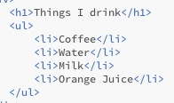
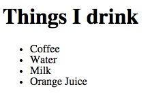
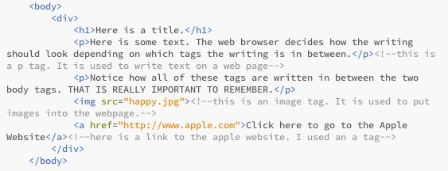

Teaching Point:
Today we will learn how to make a list in HTML. We will also learn about Div tags.
How to Make a List
If you want to make a list in HTML, there are tags for that. List tags are actually two different tags used together. You start the list with a ul tag, and you end it with a ul tag. In between those two tags, each item in your list is in between two li tags. See the example below.
 Div Tags
Another useful tag for keeping our work organized is the Div tag. Div tags are invisible. We use them to divide our HTML pages into sections. You will learn how they can be used to change the page in our next unit, but just understand that a section of an HTML page can go in between two div tags. See the example below.
Today's Assignment
Use the list tags to make a short list in your HTML page. Then put a pair of div around all of the other tags in your body (like in the exampl).
Extension Activity
You can use an OL tag instead of a UL tag in your list to make the list a numbered list instead of one with dots. Feel free to try to make a second list with UL.
Back to School Portal